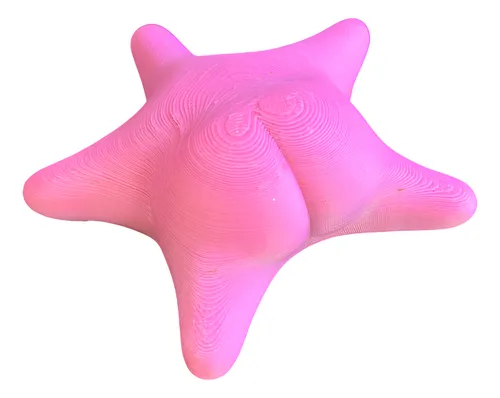

Decoraciones

Piedra Roca Volcanica Negra Acuarios Plantados Marino X 1 Kg
Precio: $3.600 ARS
PIEDRA VOLCÁNICA NEGRA INERTE
NO MODIFICA PARÁMETROS DEL AGUA
IDEALES PARA REALIZAR FORMACIONES ROCOSAS EN EL ACUARIO
PRECIO PUBLICADO POR 1 KG DE ROCA
Una piedra única que viene en varias formas, tamaños. Las piedras son principalmente de color negro , surcos y bordes irregulares. Se usa a menudo en diseños de rocas Iwagumi, pero es versátil y puede crear una gama de estilos dependiendo del uso.
Porosa, ideal para generar volúmen en acuarios con mucha elevación.
Son de tipo basáltico, básico, pero al ser insolubles no modifican el pH del agua del acuario.
Lamina Fondo Para Peceras Acuarios 40x30 Cm Adorno Barco
Precio: $2.890 ARS
Lámina para Pecera Acuario fondo Decoracion
Este adorno presenta un diseño de barco pirata que añade un toque de aventura y creatividad a tu espacio acuático. Fabricada en lámina de alta calidad, su durabilidad asegura que mantendrá su belleza a lo largo del tiempo.
El diseño de barco no solo es visualmente atractivo, sino que también proporciona un ambiente acogedor para tus peces, fomentando su bienestar y actividad.
Medidas: 40x30 cm
+ Se pega del lado de afuera con cinta adhesiva.

Casa Bob Esponja Mini Piña Adorno Para Acuario 5 Cm
Precio: $11.300 ARS
MINI PIÑA CASA DE BOB ESPONJA
Traiga un poco de Bikini Bottom al acuario de su hijo con este Adorno de Acuario "Mini Piña Casa de Bob Esponja".
- Medida: 5 cm de alto
- La casa de piña de Bob Esponja es el escondite submarino favorito de todos.
- Hecho de materiales y colores no tóxicos seguros para los peces.
- La decoración proporciona refugio y escondite lugares que los peces necesitan para ayudar a reducir el estrés.

Tetra Planta Artificial Red Ludwigia 23cm Medium Adorno
Precio: $12.500 ARS
Planta Artificial Tetra Deco Art. RED LUDWIGIA de 23 cm de altura. Importada y de excelente calidad. Disponible en distintos modelos. Ideal para decorar y dar vida a tu acuario. Su diseño realista y su color vibrante aportan un toque de belleza natural a cualquier entorno acuático. Fácil de limpiar y mantener. No requiere de cuidados especiales, lo que la hace perfecta para aquellos que quieren disfrutar de la belleza de las plantas acuáticas sin el mantenimiento que requieren las reales.

Adorno Para Pecera Estrella Culona Conicet Unica!!!
Precio: $9.400 ARS
ESTRELLITA CULONA CONICET
100 % PLA
APTO PARA PECERAS
Medida :10 cm x 10 cm x 3 cm.
Caracoles Mar Mini Encapsulado Dijes Aro Resina Biyu X250u
Precio: $14.200 ARS
El producto ofrece una buena relación entre precio y calidad. Las caracolas son preciosas y vienen en diferentes tamaños, lo que añade variedad. En general, es un producto bien valorado por su estética y calidad.